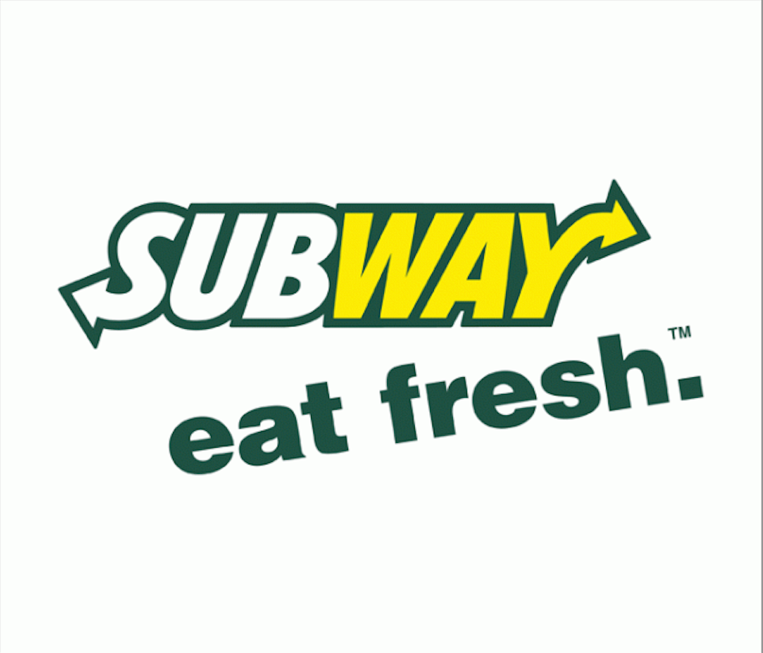

Lab1
Subway .. eat fresh

Being a fast food chain restaurant and selling only submarine sandwhiches, wraps, salads and drinks. Subway's was founded in 1965 by 17 year old Fred DeLuca and financed by Peter Buck under the name Pete's Super Submarines in Bridgeport Connecticut.
Items
$8.49.. Sweet Onion Chicken Teriyaki Footlong
$11.49.. Turkey & Bacon Guacamole Footlong
$8.49.. Rotisserie-Style Chicken Footlong
New York Locations
- Subway, 873 7th Ave Store 1, New York, NY 10019
- Subway, 692 Lexington Ave, New York, NY 10022
- Subway, 29 E 8th St, New York, NY 10003
Our Socials!